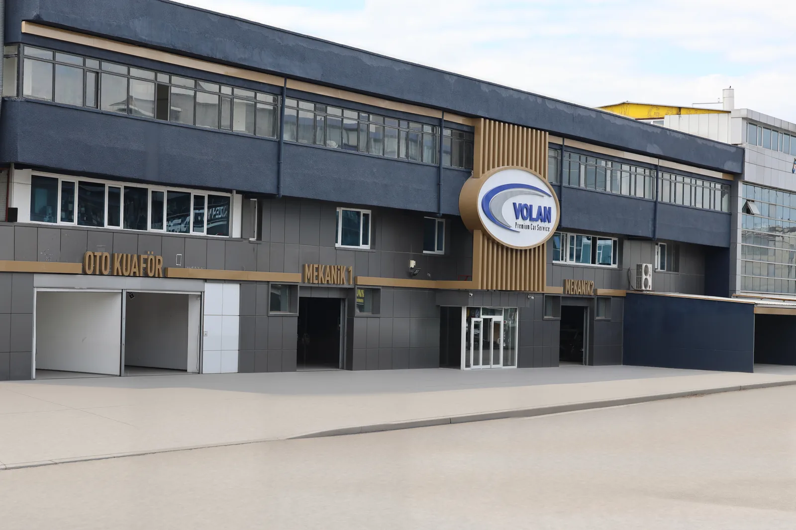

Hakkımızda
Gücümüz tecrübemizden, kalitemiz prensiplerimizden geliyor.
1954’te “Volan Küçükyılmaz” adıyla kurulduk ve uzun yıllar Volvo Yetkili Servisi olarak çalıştık. 2017’den beri Volan Otomotiv adıyla Volvo, Volkswagen ve Mercedes araçlara yetkili servis kalitesinde; daha esnek, ulaşılabilir ve müşteri odaklı hizmet veriyoruz.
- Mirasımız
- 72 yıl · 1954’ten beri
- Tesisimiz
- 1.800 m² · Şaşmaz, Etimesgut
- Kalitemiz
- Volvo · Volkswagen · Mercedes
- İstatistiklerimiz
- 4 lift · 2 mekanik atölyesi

Tesis, birimler ve ekip
Mekanik, kaporta, boya, elektrik ve sigorta işlemleri aynı çatı altında.
TesisTesis: 1.800 m², Şaşmaz, Etimesgut
MekanikMekanik: iki atölye, 4 usta, 4 lift
Kaporta ve boyaKaporta ve boya: 2 usta
HasarSigorta ve kasko: 1 hasar danışmanı
KabulServis kabul: 3 servis danışmanı
Yol7/24 yol yardım, kurtarıcı ve vale hizmeti
Dalgalı çizgili sayılar eski siteden alındı; güncelliği teyit edilecek.
Sertifika ve uzmanlık belgeleri
Teknik kadromuz alanında uzman ve sürekli eğitim alıyor.
Belge bekleniyor
Belge bekleniyor
Belge bekleniyor
Belge bekleniyor
Volan Otomotiv’in hikâyesi
“Volan Küçükyılmaz” adıyla kuruluş.
Uzun yıllar Volvo Yetkili Servisi.
“Volan Otomotiv” adıyla özel servis.
Üç kaşe, tek işletme. Bugün aynı işi Şaşmaz Oto Sanayi Sitesi’ndeki 1.800 m² tesisimizde sürdürüyoruz.